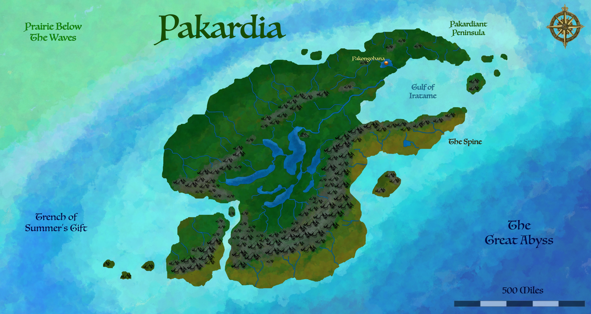
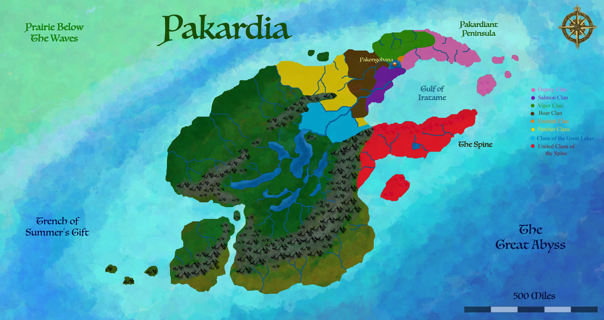
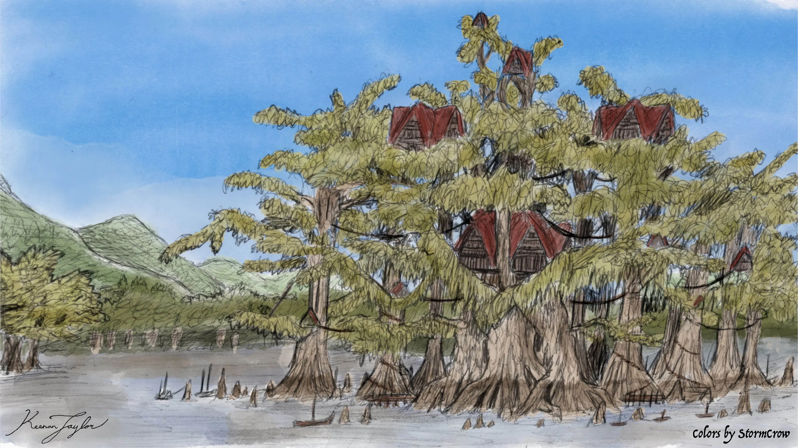

01 · INTRODUCTION
Overview

Pakongohana is the capital of the Pakardiant Confederacy, the political center of the Wood Elves of Pakardia, and one of the most unusual major settlements in the Known World. Unlike the populous commercial cities of the Free-States or the monumental capitals of the great continental empires, Pakongohana is a relatively small settlement situated on an island within a vast swamp lake. Much of its built environment is suspended between trees to protect it from flooding, and its most important governmental structures are integrated into a stand of ancient cypress trees.
The city occupies a neutral territory established at the convergence of the Viper, Osprey, Firebird, Boar, and Salmon clan territories. Its location was intended to provide a place where the chiefs of formerly warring clans could meet without granting any one of them direct control over the others. The site was therefore selected not because it possessed extensive farmland or an exceptionally large population, but because it offered a suitable meeting place for the political community as a whole.
Pakongohana's importance derives from this political and ceremonial function rather than from its economic output. Its permanent population numbers only a few thousand, consisting primarily of the royal household, guards, and members of the Beaver Clan responsible for maintaining the settlement throughout the year. The great clans possess other cities with substantially larger populations, yet Pakongohana remains the capital because it provides a shared institutional center where their representatives can assemble.
The city's history is closely associated with Ratine, a witch of the Beaver Clan who maintained the ancient cypress trees that would become the foundation of the council chambers. Approximately three thousand years ago, Ratine offered the site to the chiefs of the warring clans as a place to meet. Their gathering resulted in the formation of the First Confederacy. The living trees remain at the heart of the city's political identity, and Ratine continues to maintain them as the Holt of the Queen and Elders.
Pakongohana is therefore not a capital in the conventional sense of a city from which a centralized bureaucracy administers an entire nation. It is a place of congregation, deliberation, and shared authority. Its significance lies in the continuing agreement among the great clans to preserve a common political identity while retaining their individual territories, traditions, and local institutions.
02 · THE LAND OF THE WOOD ELVES
Geography and Environment
Pakardia and the Wood Elves
Pakongohana is situated on Pakardia, the largest island of the Known World. Pakardia supports immense temperate rainforests, extensive river valleys, rugged coastlines, sheltered fjords, and a mountainous interior. Its high biological productivity is sustained by abundant rainfall, old-growth forests, productive coastal waters, and the recurring movement of fish through its rivers.
The Wood Elves of Pakardia, commonly known as the Pakardiants or Children of the Forest, live throughout the island. Their communities are traditionally organized around distinct territories associated with watersheds, coastlines, forests, and mountain valleys. Although Pakardiant culture extends across the island, only the northeastern lowlands form a cohesive national polity. Other regions retain their own political arrangements, local identities, and relationships with the wider Pakardiant community.
Pakardiant settlement patterns reflect the island's geography. Extensive forests and mountainous terrain separate communities overland, while rivers and coastal waterways provide relatively convenient routes between them. Over time, this encouraged the development of numerous clans with distinctive traditions, dialects, and territories, while allowing them to maintain relationships through navigation, commerce, kinship, and common cultural institutions.
Rather than building their civilization around a single dominant city, the Pakardiants developed a network of communities whose political and economic significance is distributed across the island. Many clan territories possess cities much larger than Pakongohana. The capital serves a different purpose: it provides a neutral location where representatives of these separate communities can meet and conduct the affairs of the wider polity.
The Swamp Lake
Pakongohana was established on an island within a vast swamp lake. The surrounding wetland is characterized by saturated ground, acidic soils, and extensive aquatic vegetation. These conditions make the site poorly suited to conventional agriculture and help explain why it was not heavily inhabited before its selection as a neutral political center.
The acidic soil places limitations on cultivation, while the wet ground makes conventional construction difficult. Large areas of the landscape are vulnerable to flooding, and the surrounding waters form a natural barrier between the capital and much of the neighboring countryside. The site therefore offers disadvantages to ordinary settlement but significant advantages for a community whose primary purpose is political congregation rather than agricultural production.
The swamp lake helps distinguish Pakongohana from nearly every other major capital in the Known World. It is not located at the center of a broad agricultural plain, nor does it dominate a major mining or manufacturing region. Its position is instead defined by the separation between land and water, with the island providing a distinct location for the institutions shared by the great clans.
Pakongohana's unusual environment has also shaped its architecture. Rather than attempting to eliminate flooding through the wholesale drainage of the wetland, the city accommodates the surrounding water. Buildings are raised above the ground and suspended or supported between trees, allowing residents to remain above fluctuating water levels. The settlement is consequently integrated into its wetland environment rather than separated from it by extensive artificial barriers.
River and Maritime Connections
A slow-flowing river passes through the region and empties into the Gulf of Iratame. This waterway provides Pakongohana with a practical connection to more distant clan territories and to the surrounding maritime network. Its accessibility is especially important because representatives of the great clans must travel to the capital from settlements spread across a large island.
Rivers play a central role throughout Pakardia, functioning as transportation routes, sources of freshwater, and corridors connecting communities. For a political center that produces few goods of its own, reliable transport is essential. Food, materials, gifts, and tributes must be brought to the city to support its inhabitants and the officials who gather there.
The route toward the Gulf of Iratame also connects Pakongohana to the broader coastal world of the island. The sea is not simply a distant boundary for the Pakardiants but a continuation of their transportation network. Navigation enables members of far-flung clans to reach the capital without depending entirely upon difficult overland routes through dense forest or mountainous country.
Storm Protection and Isolation
Mountains to the north help protect Pakongohana from severe weather. Many of the region's major storms approach from that direction, and the mountain barrier disrupts these systems before they reach the capital. This does not eliminate flooding or the hazards of life in a wetland, but it contributes to the relative security of the settlement.
The surrounding lake, together with the island's limited agricultural potential, also helps preserve Pakongohana's distinctive political purpose. The site does not readily support an expansive population or a large export economy that could allow one local faction to dominate the others through economic leverage alone. Its importance comes instead from the shared decision to maintain the institutions of the great clans there.
03 · Unification of the Pakardiant
The Founding of the First Confederacy
The origins of Pakongohana as a political center extend back approximately three thousand years, when the clans of northeastern Pakardia were engaged in conflict and competition for influence. Although the island's communities shared a broader cultural identity, their individual territories and historical loyalties could bring them into prolonged disputes. The creation of a common political arrangement required a location where their leaders could meet without appearing to submit to a rival clan.
The swamp island that would become Pakongohana was well suited to this purpose. Its acidic soils made it less attractive for extensive farming, and it had not developed into a major settlement controlled by one of the competing clans. Its relative lack of agricultural value helped make it a plausible neutral ground for negotiations.
The decisive role in establishing this arrangement was played by Ratine, a witch of the Beaver Clan. Ratine maintained a holt among a stand of massive cypress trees on the island. The trees were already ancient at the time of the founding of the First Confederacy, and their presence provided a setting that was both distinctive and suitable for a gathering of clan leaders.
Ratine offered the site as a place where the chiefs of the warring clans could assemble. Her offer created the opportunity for a meeting outside the direct control of any one of the principal factions. Within this setting, the leaders established the First Confederacy, creating a political framework through which the clans could coordinate their affairs while preserving their separate identities.
The founding of the Confederacy did not erase the clans or dissolve their territories into a single undifferentiated state. Instead, it established a shared political institution above the local communities. The clans retained their own identities and responsibilities, while the common gathering provided a way to negotiate disputes and make decisions affecting the wider polity.
The capital's location remains a material expression of that founding arrangement. Pakongohana was not selected because one clan had defeated all the others and imposed its own city upon them. It emerged from an agreement to use neutral ground as a common political center. Its continuing existence reflects the importance placed on preserving this shared space even as the distribution of political influence among the clans has changed.
The cypress trees associated with Ratine's original holt remain central to the identity of the city. Their continued maintenance connects modern political activity with the founding of the First Confederacy and ensures that the settlement's most important institution remains associated with the place where the original agreement was made.
04 · Political Culture
The Five Founding Territories

Pakongohana was established at the convergence of the territories of five major clans: the Viper, Osprey, Firebird, Boar, and Salmon. Their territories formed part of the political landscape in which the First Confederacy developed, and their proximity to the new neutral center helped establish the city as a meeting place for the wider community.
The designation of a shared capital did not mean that the participating clans surrendered their individual lands or local authority. Each continued to maintain its own political identity and traditions. Pakongohana instead became the location where the representatives of these and other clans could participate in collective government.
The clan system is the defining feature of Pakardiant social and political organization. Clans are not simply noble families or extended households. They are enduring cultural communities associated with particular territories, historical traditions, and responsibilities toward the landscapes they inhabit. Their prestige is connected to ancestry, but also to stewardship, public service, and their ability to maintain the communities entrusted to them.
In Pakardiant political thought, clan identity and national identity are not mutually exclusive. An individual may remain deeply attached to a particular watershed, forest, or ancestral community while participating in the institutions of the wider polity. The capital provides a place where these overlapping identities can be expressed through negotiation rather than through the permanent subordination of one group to another.
The relative distribution of clan influence has changed over time. The Firebird Clan currently holds the royal position and possesses a modest territory to the east of Pakongohana, following its return to Pakardiant lands after a prolonged period of exile. Its continued possession of the throne reflects the political history of the modern Confederacy rather than an uninterrupted monopoly on authority throughout all periods of Pakardiant history.
The Panther Clans and the United Clans of the Spine also exercise considerable influence within the modern political system. The Panther Clans occupy territories that now form part of the western frontier, while the Spine clans are distributed farther from the capital. Their representatives must travel greater distances to attend meetings, but their substantial representation helps ensure that these more distant communities remain influential in national affairs.
05 · Witch Holt City
Ratine and the Holt of the Queen and Elders
The Holt of the Queen and Elders is the central sacred and governmental site of Pakongohana. Its origins lie in the holt maintained by Ratine, a witch of the Beaver Clan who offered the island as a meeting place for the chiefs who established the First Confederacy. The site has remained associated with both the founding of the polity and the continuing responsibilities of its political leaders.
The Holt is built around a stand of massive cypress trees that were already ancient at the time of the Confederacy's founding. These trees form the foundation of the council chambers. Rather than treating the living forest as an obstacle that must be cleared before political buildings can be erected, the city incorporates the trees directly into its most important institution.
This arrangement has practical as well as symbolic significance. The swamp environment makes ordinary construction difficult, and the living trees provide a stable framework around which elevated buildings can be supported. The arrangement also reflects the wider Pakardiant understanding that the natural world is a community of living relationships rather than a passive resource to be dominated.
Ratine continues to reside within and maintain the living Pakongohana cypress trees, preserving her role as custodian of the Holt. Her continued presence connects the capital directly to its founding traditions. The trees are not merely historical monuments maintained by later generations; they remain part of a living place that continues to serve a political function.
The Holt's name reflects the joint authority exercised by the queen and the elders of the great clans. It is both the center of deliberation and a sacred site where the history of the Confederacy remains present in the living landscape. Political gatherings therefore take place within a setting that communicates a particular understanding of leadership: authority is inseparable from responsibility toward the community and the land.
The Beaver Clan retains a special duty toward Pakongohana. Although it is a minor clan compared with the great political lineages, members of the Beaver Clan maintain the settlement throughout the year. Their responsibility includes caring for the city and preserving the environment and structures upon which the capital depends.
This duty helps explain why Pakongohana can remain a permanent capital despite its small population and limited economic base. Its year-round maintenance is treated as a shared political and sacred responsibility rather than an activity that must generate a commercial return.
06 · City Wovern INTO TREEs
Architecture and Urban Form

Pakongohana's architecture is adapted to its swamp-lake setting. Most of the city is elevated above the wet ground, with structures suspended or supported between trees to limit the effects of flooding. Buildings are arranged around the living vegetation and waterways rather than in a conventional pattern of streets and ground-level blocks.
The city consequently differs from the stone-built capitals of southern Arvel and the large commercial cities of the Free-States. Its urban form responds to a landscape in which saturated soils, water levels, and living trees impose considerable constraints on construction.
The cypress stand around the council chambers is particularly important. The trees form a living foundation for the central governmental complex, making the natural environment an active component of the city's architecture. The council does not simply meet near an ancient grove; its chambers are built around the trees that preserve the memory of the First Confederacy's founding.
Pakongohana's broader architecture similarly reflects a preference for adapting to the environment rather than replacing it. Elevated structures allow the city to function through changes in water level, while the use of trees as structural supports maintains a close physical relationship between buildings and forest.
This design is consistent with Pakardiant cultural values. Throughout the island, settlements are commonly integrated with forests, river systems, and long-established patterns of land use. The capital presents a particularly concentrated example of this approach because its unusual environment makes the relationship between construction and ecology impossible to ignore.
Pakongohana was not designed to become an enormous city. Its purpose is to accommodate political gatherings, maintain the royal household, house the city's guards, and support the people responsible for its year-round upkeep. Its small scale is therefore compatible with its role as a national capital.
07 · Clans United
Government and Political Institutions
The Pakardiant polity is commonly known as the Pakardiant Confederacy, a translation that has persisted despite the state's more centralized features. In political terms, it is more accurately described as a federation: a union of constituent factions that retains a centralized governing authority and a monarch. The historical name remains in common use, even though the institutions of government do not correspond completely to the conventional definition of a confederation.
Political authority is shared between the queen and the elders of the great clans. The elders form the legislative authority. They create laws, consider major questions of public policy, and make decisions that affect the wider polity. Their deliberations reflect the continuing autonomy and influence of the constituent clans.
The queen is elected from among the matrilines by the elders of the great clans. The royal position is therefore not simply an office passed automatically from parent to child. The political standing of the ruling family is connected to the clan structure and the ability of its members to retain the confidence of the wider governing body.
The queen acts as the final authority within the political system and is responsible for enacting short-term decisions. The queen's interpretations and decisions guide the operation of government, and the elders are expected to respect the authority of the office. This arrangement allows the polity to maintain a recognizable center of authority without transferring all legislative power to the monarch.
The elders also retain a mechanism for removing the ruling clan. At intervals of approximately ten years, they can call for the queen's removal and the elevation of a new clan to the royal position. The possibility of removal limits the permanence of any one family's authority and reinforces the principle that the monarchy exists within a broader political compact.
The current ruling family, the Firebird Clan, has remained in power throughout the three centuries of Assembly involvement. Its long tenure gives it a prominent position in modern Pakardiant affairs, although the political framework preserves the ability of the elders to reconsider which clan should hold the throne.
Pakongohana is essential to this balance of authority. Because the city originated as neutral ground, it provides a common location for deliberation among clans whose territories and interests remain distinct. The royal residence and council chambers are located within the same small settlement, placing the monarchy and legislative authority within a shared institutional center.
The political system reflects a broader Pakardiant preference for consultation, shared responsibility, and the preservation of local identity. Authority does not derive solely from conquest or the capacity to command force. Leaders are expected to maintain cooperation among their communities, preserve established relationships, and protect the territories for which they are responsible.
08 · Standing in the Confederancy
The Great Clans and Their Representation
The great clans are the principal political communities of the Pakardiant polity. Their territories, histories, and institutions remain distinct, but their representatives participate in the shared government centered at Pakongohana. The elders of these clans exercise legislative authority and take part in selecting the queen.
The historical relationship between the capital and the founding territories continues to shape the political map. The Viper, Osprey, Firebird, Boar, and Salmon clans were associated with the territories converging around the original neutral site. Yet the modern polity extends beyond these founding relationships, incorporating additional clans and territories across Pakardia.
The Firebird Clan occupies a particularly significant position because its royal line has maintained the throne throughout the period of Assembly involvement. Following a prolonged exile, the clan returned to Pakardiant territory and now possesses a modest holding east of Pakongohana. Its association with the monarchy links its modern political position to the older institutions of the Confederacy.
The Panther Clans form an important part of the western political landscape. Their territories lie farther from the capital than those of several northeastern clans. They nevertheless possess six representatives, giving them a substantial voice in the shared political system.
The United Clans of the Spine are also represented in the government. Their members must travel significant distances to reach Pakongohana, but their representation provides a means of influencing national decisions despite their geographical separation. The combination of territorial representation and shared institutions helps maintain the participation of groups whose local conditions differ substantially.
Such arrangements reflect the Pakardiant view that political unity should not require cultural uniformity. A clan's distance from the capital does not remove its right to participate in collective affairs. Instead, representation and consultation provide mechanisms through which different territories can remain part of a common polity without abandoning their local institutions.
09 · Trade and Commerce
Population and Economy
Pakongohana has a permanent population of only a few thousand people. Most residents belong to the royal household, serve as guards, or undertake the maintenance of the settlement through the Beaver Clan. Compared with the larger cities of Pakardia, it is a small community whose population is shaped by its institutional purpose rather than by the opportunities for commercial expansion.
The city does not possess a substantial export economy. Its swamp-lake setting and acidic soils limit conventional agriculture, while its principal reason for existence is the gathering of the political institutions. Some kollasperm grains are produced, and locally obtained fish and hunted animals contribute to the food supply, but these sources are insufficient to support the population independently.
Pakongohana therefore relies primarily upon food and other necessities brought from the territories of the great clans. These contributions serve as tributes and supplies that sustain the royal household, the guards, the Beaver Clan, and the individuals attending political gatherings.
This dependence is not necessarily a sign of economic weakness. Pakongohana was not established to compete with the island's major commercial centers. Its purpose is to maintain a shared political space whose value is measured by the stability and continuity of the wider polity rather than by the production of marketable goods.
The great clans possess cities with far larger populations and more extensive local economies. Those settlements sustain agriculture, fisheries, forestry, craft production, and trade. Their resources help support Pakongohana while allowing the capital to remain a dedicated place of political congregation.
The arrangement also limits the incentive for the capital to develop into an independent economic power capable of dominating the constituent clans. Pakongohana derives its continued importance from their cooperation. Its material survival depends upon that cooperation being renewed through the regular provision of supplies and maintenance.
11 · naturism of the wood elves
Religious and Cultural Significance
Pakardiant culture places considerable importance on the relationship between people, the natural world, and the communities that have inherited particular landscapes. Forests, rivers, mountains, and the sea are understood as parts of a living world in which human society participates, rather than merely resources to be exploited. This outlook informs the design and significance of Pakongohana.
The city is not built around a single enormous royal monument that separates the rulers from the surrounding landscape. Its most important political institution is associated with living cypress trees, and its buildings are raised above wetland conditions rather than requiring the environment to be transformed completely. The capital's form embodies an understanding of authority grounded in stewardship and continuity.
Witches occupy a respected position within Pakardiant society. In contrast to regions where the legacy of the Age of Witches produced widespread suspicion, Pakardia maintains traditions that recognize magical practitioners as physicians, scholars, healers, judges, agricultural specialists, and advisors. Ratine's role at Pakongohana is consistent with this broader cultural acceptance of magic as part of the living world.
The continuing presence of Ratine and the ancient cypress trees gives the capital a distinctive relationship with historical memory. The original gathering of clan chiefs is not simply an event preserved in written accounts. Its location remains in use, and the trees associated with the founding continue to form the center of political life.
This continuity is particularly meaningful in a society where Kaimeran lifespans extend for centuries. Elders may remember events that younger generations know through family histories, while traditions are transmitted through ongoing personal relationships. Pakongohana provides a physical setting for these different generations to meet and deliberate within a place whose history is itself part of the community's living memory.
12 · international relationships
Pakongohana and the Wider Known World
The Pakardiant polity occupies a distinctive position among the major powers of the Known World. Its political organization differs from the centralized administration of the Cha'Khati Empire and the commercial oligarchy of the Free-States of Qadan. Rather than relying primarily on conquest or maritime commercial dominance, the Pakardiants maintain a network of clans whose cooperation is supported by shared institutions and long-established traditions.
Pakongohana's role as capital reflects these differences. It is not the largest population center in the polity, nor does it dominate the island's exports. Its importance comes from the fact that the great clans recognize it as their common meeting place.
The capital's political system allows representatives of distant territories to participate in national decision-making while retaining their own clan identities. This model of government has helped sustain Pakardiant unity without requiring the complete centralization of local authority. It also provides a mechanism for resolving disputes through deliberation rather than allowing every disagreement to develop into armed conflict.
Pakardiant history includes periods of serious internal division and foreign pressure. The clans have not always acted in concert, and the political union has had to be preserved through negotiation and mutual obligation. Nevertheless, the survival of Pakongohana as a shared capital demonstrates the continuing importance attached to collective political institutions.
In the modern era, the Pakardiants maintain extensive trade with the Free-States, the Cha'Khati Empire, the Qajarith Republic, the Kentarim Islands, and other maritime communities. Yet their historical experiences have also encouraged caution toward external interference. Independence, local autonomy, and the preservation of their distinct cultural traditions remain important concerns.
13 · Modern Pakongohana
Pakongohana in the Modern Era
Today, Pakongohana remains the capital of the Pakardiant Confederacy, despite its small population and the existence of larger and wealthier cities throughout the island. Its continued political importance rests on a principle established at its foundation: the capital belongs to the shared political community rather than to one constituent clan.
The queen resides in Pakongohana, and the elders of the great clans gather there to create laws, debate major decisions, and determine the direction of the polity. The capital therefore brings together the legislative and royal institutions that maintain Pakardiant unity.
The Firebird Clan's continued hold on the throne during the three centuries of Assembly involvement has given it a prominent place in the modern political order. Its position remains subject to the traditional authority of the elders, who retain the means to call for a change in the ruling clan at the appropriate interval.
The Beaver Clan continues to maintain the settlement, while Ratine's care for the living Pakongohana Trees preserves the relationship between the capital's founding and its present governmental function. The royal household, guards, and maintenance communities sustain a city whose responsibilities extend far beyond its own permanent population.
Pakongohana's existence also demonstrates the distinction between economic size and political importance. Its inhabitants depend upon tribute and contributions from the great clans, but the city does not need to produce large exports to justify its continued maintenance. Its value lies in the government it enables, the traditions it preserves, and the negotiations it makes possible.
The capital remains a living expression of Pakardiant political philosophy. Its buildings adapt to the wetland rather than erasing it; its central institution is founded upon a living grove rather than an isolated monument; and its government brings different clans together without requiring the abandonment of their individual territories. In Pakongohana, political unity is maintained through continuing relationships among people, institutions, and the land.